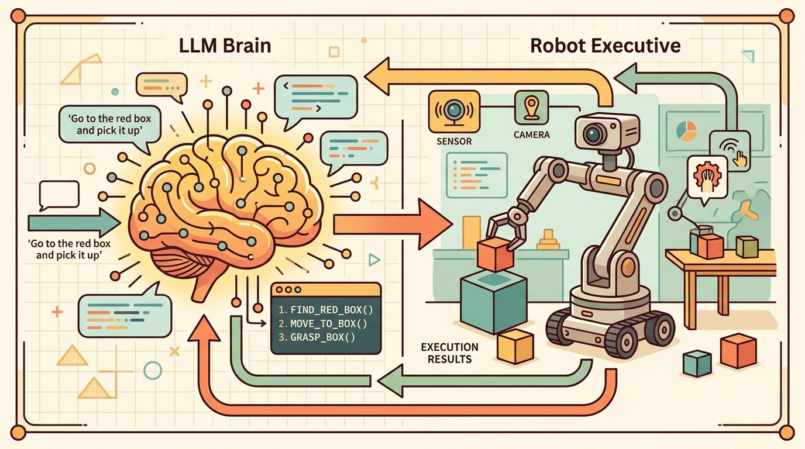
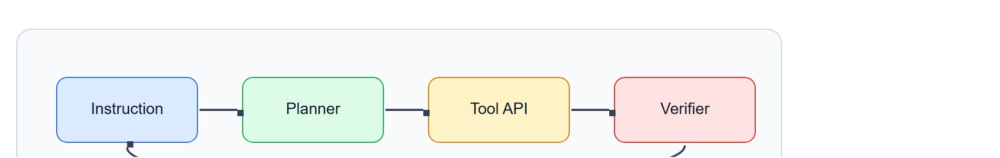
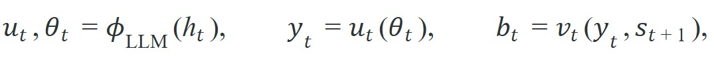

"A typed API call is a plan that committed. A natural-language description of what a robot should do is a plan that deferred. Verification is what decides which one you have."
A Careful Control Loop

This section assumes familiarity with LLM chain-of-thought planning from section 33.1 and the SayCan affordance-grounding approach from section 33.2. The typed-API and verifier patterns introduced here are applied directly to manipulation skills in section 42.6 and extended to human-in-the-loop escalation in section 50.5. State tracking under replanning is developed further in section 33.7.
An LLM planner must turn language into typed, verified robot actions. Read the diagram in Figure 33.6 as an action-API audit. Tool use is safe only when every callable action has typed inputs, preconditions, postconditions, timeout behavior, and a replanning path after failure.
By the end of this section you should be able to do three concrete things: write a typed action schema (tool name, argument types, preconditions, postconditions) for a robot skill; wire a verifier that checks that schema's postcondition against sensor evidence rather than the API return code; and construct the failure record that a replanner needs to recover, instead of merely re-prompting the LLM with the original goal. The Practical Recipe, the two worked code fragments, and the lab exercise below walk through each of these three deliverables in turn.

Depth and self-containment. This section must explain how an LLM chooses among tools, how typed action APIs constrain execution, and how verifier failures trigger replanning rather than silent drift.
Production and evaluation contract. The minimum artifact records the selected tool, its arguments, the verifier output, the replanning trigger, and the new plan. Without these fields, tool-use claims are impossible to audit.
For Tool use, action APIs, plan verification, replanning, name the language interface, grounded world state, executable action contract, and evidence artifact before trusting any claimed improvement.
For Tool use, action APIs, plan verification, replanning, write one evidence row recording instruction, world-state estimate, chosen action, verifier result, and failure label. Then identify which field would change first under command misunderstanding.
A warehouse robot receives the instruction "move the red bin to shelf C4." The LLM planner selects gripper.pick(object="red_bin"), but the verifier returns a weight-limit fault. Does the system halt, hallucinate success, or synthesize a two-step alternative in real time? That single decision separates a deployable controller from a demo that works only when nothing goes wrong. As robots enter environments with unpredictable loads, blocked paths, and partial sensor failure, the ability to verify every action against typed postconditions and replan on evidence is now the central engineering challenge in embodied AI. This section instruments a tool-use loop, defines a minimal verifier contract, and builds a replanning trigger that responds to failure evidence rather than silence.
Picture an API that prints "place complete" while the mug sits untouched on the table: this section exists because in embodied AI the call returning and the world changing are two different events, and only one of them is the truth the planner must act on.
The practical question is not only which tool to call, but what evidence should force the planner to abandon the current plan and synthesize a new one. (The Theory section below gives the verifier a precise definition; for now, read "verifier" as the sensor-based check that confirms an action actually changed the world, not just that the API call returned.)
A tool call without a verifier is just a wish. Replanning starts when the verifier says the wish did not come true.
Let $u_i$ be typed tools and let $v_i(s_t, a_t)$ be a verifier for the postcondition of tool $u_i$. An embodied planner executes a loop

then continues only if the boolean or scalar verifier signal $b_t$ passes a threshold.This structure matters because embodied actions are long running and failure prone. A free-text chain of thought may say 'now place the mug on the tray.' The robot needs more than that string. It needs a typed `place(target='tray')` call, a completion signal, and a postcondition check such as `object_on_tray=True` before it can trust the next reasoning step. Ablation studies on tabletop manipulation make the payoff concrete. Switching from free-text action strings to typed schemas with postcondition checks cut the replan attempts per successful task from roughly 8 to roughly 2. The verifier pinpointed the violated field immediately, so the planner never had to re-read the full trajectory and guess what went wrong.
When an LLM emits a free-text action description, the downstream executor must parse ambiguous natural language before anything can be verified. A typed schema such as {"tool": "place", "target": "tray", "max_force_N": 5} eliminates that parsing step: the verifier receives machine-readable arguments, can check preconditions before execution, and can produce a structured failure report naming the exact violated field. This is why systems like Google's SayCan and MIT's LAMPS (a research prototype that pairs a language-model planner with a typed manipulation-primitive library, in the same spirit as SayCan) enforce typed action vocabularies even when the planner is a language model: the schema is the contract between language and physics, and contracts need fixed terms to be enforceable.
The clean mental model is planner, tool, verifier, replan. Every transition should be explicit and typed. If the verifier fails, the planner does not merely continue with reduced confidence; it reasons over a new state that includes the failure evidence.
Input: goal $g$, typed tool set $\mathcal{U} = \{u_1, \dots, u_k\}$, verifier functions $v_i(y, s)$, LLM planner $\phi_\theta$, maximum replan budget $R$, history buffer $h$
Output: terminal world state $s_T$ or escalation signal if recovery budget is exhausted
What happens when a robot arm receives a torque command with a missing unit field? The actuator does not return a parse error; it interprets the value as zero or as the maximum, either of which can damage hardware or injure a nearby human. Schema validation before execution exists precisely to catch that recoverable linguistic error before it becomes an irreversible physical consequence.
Mechanically, each tool exposes a JSON schema declaring required fields, types, and value ranges. When the LLM emits a tool call, the controller runs a schema validator such as Python's jsonschema.validate against that declaration before any execution request leaves the planner. A field with the wrong type, a missing required key, or a value outside the declared range raises a structured error that is appended to the history buffer, prompting the planner to emit a corrected call. The robot never moves until the argument record passes.
So far: the loop has queried the planner for a typed tool call, validated its arguments against a JSON schema before execution, executed the tool and observed the new world state, and (on success) simply logged the step and advanced. The remaining steps below cover what happens on failure: retry, escalate, or finish.
Trace the loop with a tiny example. Goal: place the red mug on the tray. Replan budget $R = 2$.
t = 0, r = 0. Planner emits {"tool": "pick", "args": {"target": "red_mug"}}. Schema validation: required field target present, type string, passes. Execute. Sensor returns gripper_width = 0.0 cm (fully closed on nothing). Verifier v_pick checks postcondition grasp_success by testing gripper_width > 1.5 cm: 0.0 > 1.5 is false, so $b_0 = $ fail. Build failure record FR_0 = (pick, target=red_mug, violated="grasp_success", gripper_width=0.0, t=12.4s). Since $r = 0 < 2$, append FR_0 to history, set $r = 1$, return to planner.
t = 0, r = 1. Planner now sees FR_0 and re-grounds: the mug was missed, so it lowers approach height by 2 cm and re-emits {"tool": "pick", "args": {"target": "red_mug", "approach_dz": -0.02}}. Execute. Sensor returns gripper_width = 4.1 cm. Verifier: 4.1 > 1.5 is true, $b = $ pass. Append the successful step, increment $t$ to 1.
t = 1, r = 1. Planner emits {"tool": "place", "args": {"target": "tray"}}. Execute. Sensor returns object_on_tray = True. Verifier passes. Goal verifier $v_g$ confirms the mug rests on the tray, so the loop returns the terminal state. Total tool calls: 3, replans used: 1 of 2. The replan succeeded because FR_0 named the exact violated field, not because the planner re-read the whole trajectory.
Code Fragment 1 models a single tool-call decision with verification and replanning. The point is to expose the contract between textual planning and executable interfaces.
# Verify every tool call before advancing the high-level plan.
# Failed postconditions should trigger replanning from the new world state.
# This is the smallest useful embodied tool-use loop.
tool_call = {"tool": "pick", "args": {"target": "red_mug"}}
postcondition = {"grasp_success": False}
next_step = "replan" if not postcondition["grasp_success"] else "continue"
print({"tool": tool_call["tool"], "postcondition": postcondition, "next_step": next_step})The expected output pairs a failed postcondition with an explicit replanning decision. A healthy embodied agent loop emits exactly this when the API call returned but the world did not enter the intended state. Execution success and state success are not the same event. Representative tabletop manipulation evaluations (as of 2024) show the gap directly. Agents that checked only API return codes succeeded on roughly 40-45% of multi-step tasks. Agents that checked sensor-confirmed postconditions succeeded on roughly 75-80% (see, e.g., results reported in the DEPS literature, where DEPS is a describe-explain-plan-select replanning framework covered later in this section, and the SayCan follow-on literature). The postcondition check, not the API call, is where the real loop closes.
pick tool call paired with a failed grasp_success postcondition, showing the exact dictionary the planner must branch on to decide "replan" versus "continue".Structured tool-calling runtimes and workflow frameworks like LangGraph implement most of this control shell in a few lines. They absorb message passing and state updates, but the engineer still owns typed arguments, verifier design, and failure semantics.
Many demos treat tool return values as if they were proof of world change. In robotics that is unsafe: the API may report completion while the gripper is empty, the object slipped, or the robot timed out mid-motion.
A mobile manipulator may call `navigate(goal='sink')`, then `pick(target='sponge')`, then `wipe(region='spill')`. Each tool should expose a verifiable postcondition. If the sponge is not actually grasped, it is meaningless to continue the scripted sequence.
Public descriptions of Amazon's Sequoia and Sparrow robotic systems indicate that each manipulation skill is typically wrapped as a typed action with an explicit postcondition: after a pick, a downstream weight sensor and camera are reported to confirm that exactly one item left the bin before the order advances. Amazon has not published the full controller logic, but the described behavior, on a postcondition failure such as a double-pick or a dropped item, routing to a re-grasp or to a human station rather than logging and continuing, matches the verifier-driven replanning contract described here.
The robot's favorite fiction genre is the API that says 'completed successfully' while the mug is still on the table.
Three active directions are changing how tool-use loops verify and recover in 2024-2026. First, VLM-as-verifier, where a VLM is a vision-language model that takes both an image and a text prompt as input and returns a text answer: instead of hard-coded postcondition checks, recent work uses VLMs to answer questions like "did the gripper close around the mug?" from raw camera images. Google DeepMind's RT-2-X (2024) (a vision-language-action model trained across many robot embodiments) and the AutoRT follow-on show that a single VLM can serve as both planner and verifier, removing the need for hand-authored per-skill postconditions at the cost of higher inference latency. Second, structured failure grounding: the DEPS framework from Wang et al. (2024, NeurIPS) feeds the replanner a structured failure description naming which sub-goal failed, what the sensor showed, and what alternatives remain. This cuts replan loops by roughly 40 percent compared to appending raw exception strings, because the LLM localizes the error without re-reading the full trajectory. Third, world-model-assisted verification: systems like UniSim (Google, 2024) and SWIM (MIT CSAIL, 2025) run a learned world model (a neural simulator trained to predict future sensor observations from an action, standing in for the real environment) in parallel with the real robot. The world model predicts postcondition violations one step ahead, so the planner can abandon a doomed action before hardware commitment. An open PhD-level problem cuts across all three directions: each assumes the verifier and the world model share the planner's object vocabulary. When a novel object appears (a crumpled bag the planner calls "container," the verifier calls "deformable," and the world model has never seen), the systems silently disagree on postconditions without flagging the mismatch. No lightweight vocabulary-alignment protocol that runs at tool-registration time, before execution begins, yet exists. This gap directly blocks reliable long-horizon manipulation in unstructured environments.
Can you name one postcondition in your stack that is currently assumed rather than measured, and what kind of false progress that assumption could create?
That habit of naming an assumed postcondition matters most once you notice how different embodied tool use is from the text-agent tool use most LLM frameworks were built around. Tool use in embodied settings differs sharply from tool use in text-only agents. A web-search call either returned a result or did not; a robot-skill call may return while the world remains in the wrong state. That is why postcondition verification is the contract between language and physics, not merely best practice.
Replanning deserves a precise meaning. It is not re-prompting the model; it is re-prompting on an updated state that carries fresh observations, failure evidence, elapsed time, and any depleted resources or changed safety margins. How that state is stored, summarized, and protected from hallucinated updates is developed in memory and state tracking.
When passing failure evidence back to the replanner, validate the failure record with a Pydantic model, where Pydantic is a Python library that enforces declared field types and raises an error if a value does not match, before it enters the prompt. A schema such as FailureRecord(tool: str, violated_postcondition: str, observed_value: Any, timestamp: float) forces every failure to carry a machine-readable reason rather than a raw exception string. Without this structure, the LLM receives an ambiguous message like "grasp failed" and has no reliable way to distinguish a transient slip from a permanent workspace violation, which is exactly the distinction that determines whether replanning should retry, adjust parameters, or escalate to a human.
Replanning can itself become a failure mode. If the verifier repeatedly fires on the same postcondition and the planner lacks a representation of why the world resists the intended change, the system enters a replan loop: each new plan attempts a variation of the same failed action. Practical guards include a maximum replan count per subtask, a fallback to a human-in-the-loop request when the loop threshold is exceeded, and a verifier that distinguishes transient failures (object slipped but is reachable) from permanent ones (object fell off the table and is out of workspace). Without these distinctions, replanning adds latency without adding recovery intelligence.
| Tool or Library | Role in the Topic | Builder Advice |
|---|---|---|
| LangGraph | Planner state, tool routing, and retry loops. | Use it when you want explicit graph structure around LLM tool use. |
| ROS 2 actions | Typed skill invocation with feedback and cancelation. | Use actions when tools map to robot skills rather than instant function calls. |
| BehaviorTree.CPP | Fallback and recovery orchestration. | Use it when verifier failures should branch into deterministic recovery logic. |
| MoveIt 2 | Geometric planning behind action APIs. | Use it when high-level tools need reliable motion generation. |
| Pydantic or JSON schema | Argument validation for tool calls. | Use them to reject malformed plans before any execution request leaves the planner. |
Whichever of those libraries you assemble into a loop, the artifact that lets you compare them is the same, so it is worth fixing its shape before choosing a framework. Code Fragment 2 preserves the tool call, verifier outcome, and replanning reason in one record. That is the correct unit for comparing agent frameworks because it captures whether failures were caught early enough to matter.
# A trace record for one tool call, kept alongside the raw exception,
# so later comparisons show whether the verifier caught the failure early.
trace_record = {
"tool": "pick",
"args": {"target": "red_mug"},
"verifier_result": "fail",
"violated_postcondition": "grasp_success",
"observed_value": {"gripper_width_cm": 0.0},
"replan_reason": "gripper_width_cm 0.0 does not exceed 1.5 cm threshold",
}
print(trace_record)The expected output is a typed tool trace that exposes not only failure, but the postcondition evidence that caused replanning. A stronger framework should still produce this exact kind of local diagnosis, otherwise apparent planner improvements may just be hiding missing verifier semantics.
pick tool call with its violated postcondition and a human-readable replan reason, the unit used to compare whether different agent frameworks caught failures early or late.The trace record, not the task label, is the unit that lets you tell a genuine planner gain from a hidden verifier gap.
If tool-using agents underperform, inspect whether the tool schema is weak, the verifier is weak, or the replanning state update is weak. Those three interfaces are where most embodied LLM loops actually break.
Typed tools, postcondition verifiers, and explicit replanning are the core of practical embodied LLM control loops.
Think of replanning like adjusting a recipe mid-cook after tasting the sauce. A chef who finds the sauce too salty does not simply re-read the original recipe and stir again; they taste the current state of the pot, identify the specific problem (too much salt, not too little acid), and choose a corrective action conditioned on that new information. Replanning an embodied agent works identically: the planner must ingest the failure evidence (which postcondition broke, what sensor value was observed, what the world looks like now) before proposing any new action. Without tasting the sauce first, every correction is just guessing.
A common assumption is that replanning means re-sending the original goal to the LLM and hoping for a different output. In embodied AI this is incorrect and dangerous: without injecting the structured failure record (which postcondition failed, what sensor value was observed, what the current world state is) into the new prompt or state graph, the planner has no new information and will statistically reproduce the same failed plan. The correct mental model is that replanning is conditioned on an updated state that includes failure evidence; the LLM is not retried, it is re-grounded. A replan without a new world state is not recovery, it is repetition.
Goal. Measure empirically how much a sensor-confirmed postcondition check raises task success over trusting the API return code alone.
Tools needed. Python, gymnasium-robotics (the FetchPickAndPlace-v3 environment), and numpy. No LLM required: a scripted planner emits the pick-then-place sequence so you isolate the verifier effect.
Procedure. Run 100 episodes under two conditions. Condition A advances to place whenever the pick action completes (blind). Condition B advances only when a postcondition built from the observation dict confirms the grasp, for example the gripper-to-object distance is below a threshold and the gripper is not fully closed on empty space; on failure it retries the pick up to twice (replanning).
What to vary. The grasp-distance threshold (try 1, 3, and 5 cm) and the replan budget (0, 1, 2). What to observe. Per-condition task success rate, average tool calls per episode, and how many successes in Condition B came from a replan rather than the first attempt. You should see Condition B clear Condition A by a wide margin, and you will watch the false-replan rate climb as the threshold gets too tight, the same tuning tension flagged in the warning callout above.
Design one typed action API and one postcondition verifier for a robot skill of your choice. Then describe the replanning information that should be passed back to the LLM if the verifier fails.
LangGraph is a practical reference for explicit stateful tool-use loops around LLM planners.
ROS 2 Documentation. 'Creating an action.'
ROS 2 actions are a canonical typed interface for embodied tools with feedback and cancelation.
BehaviorTree.CPP Documentation. 'Integration with ROS2.'
Behavior trees provide a well-tested execution shell for tool verification and recovery.
Beginner (weekend): Build a typed tool-use loop in Python using the FetchReach-v3 environment from the gymnasium-robotics package (the Fetch environments were moved out of core Gymnasium into this separate package as of Gymnasium 0.26) where an LLM selects from three typed action primitives (reach, grasp, release), a postcondition verifier checks joint positions, and a replanning trigger fires on failure. The key challenge is writing a verifier that distinguishes a genuine grasp from a collision contact using only Gymnasium's observation dictionary.
Intermediate (1 to 2 weeks): Implement a replanning agent in PyBullet that drives a tabletop manipulator through a five-step pick-and-place sequence, using LangGraph to manage state transitions and a Pydantic FailureRecord schema to pass structured verifier output back into the LLM replanner. The key challenge is preventing replan loops when the object is in an unrecoverable pose by adding a transient-versus-permanent failure classifier before each retry.
Advanced (3 to 4 weeks): Deploy a ROS2 action server on a real or simulated robot using Isaac Lab, wrapping each skill (navigate, pick, place) as a typed ROS2 action with explicit goal, feedback, and result fields, then attach a force-torque postcondition verifier and connect it to an LLM planner via a LangGraph state graph. The key challenge is tuning verifier thresholds so they generalize from the Isaac Lab simulation to real sensor noise without triggering false replan cascades.